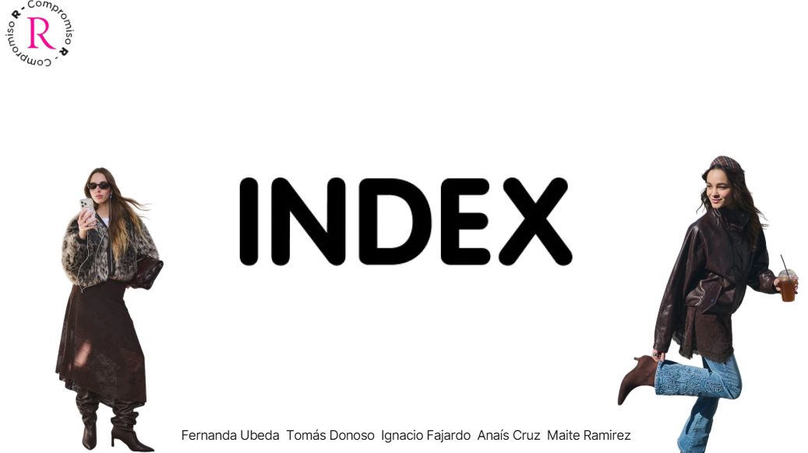

Plan de Marketing / EstrategiaAnálisis "Index"
Diagnóstico estratégico y análisis de posicionamiento de marca para optimizar el alcance digital y la propuesta de valor.
Enfoque clave: Auditoría de marca, análisis de competencia (Benchmarking) y diagnóstico FODA.
Entregables: Propuesta estratégica comercial, definición de buyer personas y hoja de ruta.